Estilos>>Técnicas

Vamos a denominar imágenes de sustitución a aquellas que modifican su apariencia cuando el ratón pasa sobre ellas. Su utilidad principal será la creación de menús.
Crear una página cuyo prólogo recoja correctamente el tipo de documento. (Recuerda que N|VU introduce en prólogo correcto con la refenreia completa cuando se crean documentos XHTM, tanto con DTD transitional como strict, pero que cuando se crean documentos HTML el prólogo es incorrecto porque falta la referencia absoluta a la DTD). Cuando la definición del tipo de documento no es correcta algunos navegadores pueden adoptar comportamientos erráticos.
Creamos una lista con los elementos que se mostrarán en el menú y creamos los enlaces (para nuestro ejemplo serán nulos):
Como es posible que finalmente deseemos situar nuestro
menú en una zona de la página vamos a
encerrarlo
dentro de una división a la que le aplicaremos el
identificador id="menu"
Crear el juego de imágenes que se utilizará para los efectos. Necesitaremos una imagen para el mostrar en la página y otra que se mostrará únicamente cuando el ratón pase sobre ella.
Aunque podrían utilizarse tamaños diferentes para ambas imágenes es preferible que sean del mismo tamaño para que todo sea más sencillo.
Para el ejemplo hemos seleccionado una colección de fotos de setas procedentes del banco de imágenes del CNICE.
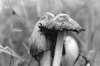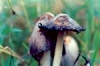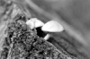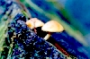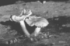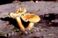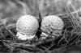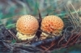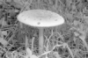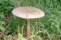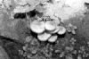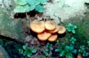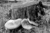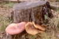
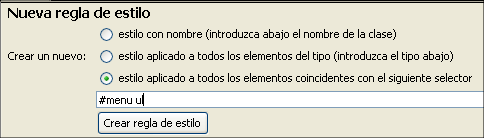Ajustaremos márgenes y rellenos para que la lista quede al borde de la división y eliminaremos los boliches del listado que hay dentro de nuestra división menú, para lo que recurriremos a crear un estilo interno utilizando el editor CSS.
En la pestaña pondremos a 0 los valores de y izquierdos y en la pestaña elegiremos como con lo que nuestra lista aparecerá ahora así.
Ahora haremos que nuestra lista se presente en horizontal, con
cada item a continuación del anterior. Para ello crearemos
en el editor CSS una nueva
#menu li que afectará unicamente a
los elementos de lista que se encuentren dentro de la
división menu y le adjudicaremos en la pestaña el valor a la propiedad
Como puede verse la apariencia es ahora bastante confusa al haberse colocado todos los ítems correlativamente, pero ya lo corregiremos más adelante.
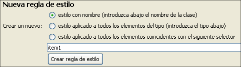Colocaremos ahora una imagen como fondo de cada uno de los enlaces.
Para poder modificarlos posteriormente vamos a tener que crear una clase para cada uno de ellos. Así pues iremos creando una serie de nuevas reglas a las que iremos llamando item1, item2 y así sucesivamente. En este caso estamos creando clases en lugar de identificadores id, por lo que utilizaremos la opción al crear cada una de las nuevas reglas. Es importante recordar que, aunque cuando vemos el código las clases se identifican porque se inician con un punto, no debemos ponerlo al adjudicarles el nombre, ya que será el programa el que se encargue de esta tarea. (De hecho si intentamos nombrar una clase empezando por un punto el editor no la creará).
Una vez que hayamos creado todas las clases las adjudicaremos a cada uno de los elementos de la lista. Para ello lo más cómodo será utilizar las referencias de la barra de estado, ir seleccionando cada elemento <li> y pulsando con el botón derecho para seleccionar clases y adjudicarle la que le corresponde por su orden.
Cuando hayamos realizado esta tarea podemos completar el trabajo abriendo el selector y aplicando un fondo para cada uno de las clases tal como se muestra en la siguiente imagen.
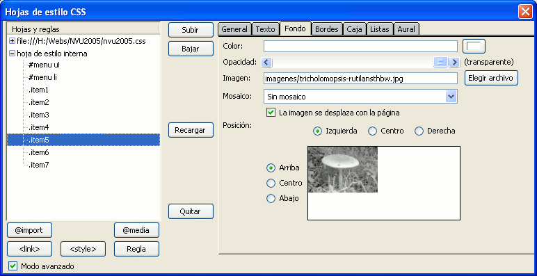
Si vas a publicar la página
utilizando el gestor de N|VU no habrá problemas puesto que
él se encargará de convertir las rutas absolutas
para las imágenes de fondo en relativas, pero la
recomendación es que utilices la pestaña  para modificarlo
manualmente.
para modificarlo
manualmente.
Lo que habremos conseguido hasta el momento es lo que se muestra a continuación y, la verdad es que no parece muy alentador. Pero no te preocupes porque ya hemos avanzado mucho y la situación variará bastante con las siguientes modificaciones.
Vamos ahora a darle un estilo a los enlaces de nuestro menú, para lo que crearemos una nueva regla #menu a que afectará a los enlaces que se hayan creado dentro de nuestro menú. (Hemos estado utilizando este identificador desde el principio pero aún no habíamos definido ninguna regla con sus propiedades)
Aplicaremos las siguientes propiedades y valores en la pestaña caja:
hidden.
Si no lo hiciéramos
así, no nos habría servido de nada el truco de la
altura 0, ya que el contenido que "se sale" del espacio se
mostraría, mientras que ahora queda oculto.Como las imágenes han quedado juntas vamos a
separarlas modificando la regla #menu li que
ya habíamos
creado añadiéndole en la pestaña
un de 1
píxel.
La siguiente tarea será establecer el
comportamiento de cada elemento cuando el ratón pase por
encima. Necesitaremos crear una seudoclase :hover para
cada uno de los elementos de la lista y adjudicarle
como fondo la imagen en color correspondiente en cada caso.
Además, para garantizar que
siempre se colocará por encima de la imagen en blanco y
negro le daremos también, en la ventana , un valor 50
para la propiedad
(realmente sería suficiente darle
un valor 2 ya que con ese estaría por encima del valor de
profundidad por defecto).
Posiblemente sea más rápido en este caso
acudir a la pestaña y
añadir manualmente las reglas, copiando y pegando la regla
original, añadiéndole la seudoclase :hover
al final y modificando el nombre de la imagen que, si hemos actuado
como es habitual se llamará igual que la de blanco y negro
pero añadiendo o quitando unos caracteres que
serán iguales para todas las imágenes. (en el
ejemplo las imágenes en blanco y negro finalizaban su nombre
con las letras bw y las de color se llamaban igual pero sin esas letras)
Por último, solo nos resta corregir la
flotación. Dado que los elementos de la lista tienen
establecida la propiedad de flotación a la izquierda podemos
encontrarnos con que el flujo de texto se produzca a la derecha de
nuestra lista y, normalmente, nos interesará que no sea
así y que la lista quede separada del resto. Para ello
corregiremos la el contenedor general al que habíamos
llamado menu dándole, en la
pestaña
las
dimensiones de y que deseemos adjudicarle
en
función de nuestras imágenes y especificando el
valor para la
propiedad .
El código de nuestra hoja de estilos interna quedaría así:
<style type="text/css">
<!--
#menu ul { list-style-type: none;
margin-left: 0pt;
padding-left: 0pt;}
#menu li { float: left;}
.item1 { background-repeat: no-repeat;
background-image:
url(imagenes/coprinus-comatusthbw.jpg);}
.item1:hover { background-repeat: no-repeat;
background-image:
url(imagenes/coprinus-comatusth.jpg);
z-index:50;}
... resto de ítems de
la lista
#menu a { display: block;
width: 100px;
padding-top: 66px;
overflow: hidden;
height: 0px;}
#menu li { float: left; margin-right:1px;}
#menu {display:block; width: 710px; height: 66px;}
-->
</style>
Y el código HTML en el cuerpo del documento sería:
<div id="menu">
<ul>
<li
class="item1"><a href="#">Coprinus
comatus</a></li>
<li
class="item2"><a href="#">Hypholoma del
aliso</a></li>
<li
class="item3"><a href="#">Pholiota
penetrans</a></li>
<li
class="item4"><a href="#">Amanita
muscaria</a></li>
<li
class="item5"><a href="#">Macrolepiota
procera</a></li>
<li
class="item6"><a href="#">Armillaria
ostoyae</a></li>
<li
class="item7"><a href="#">Thricolompsis
rutilans</a></li>
</ul>
</div>